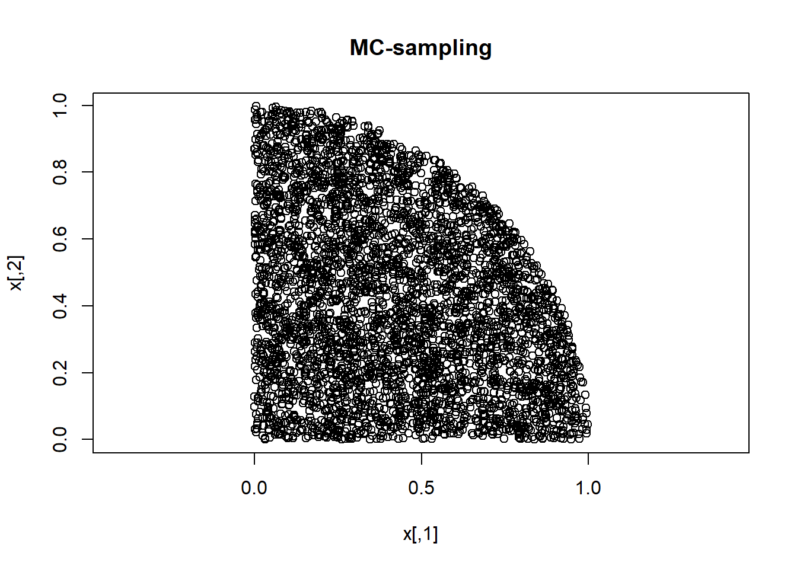
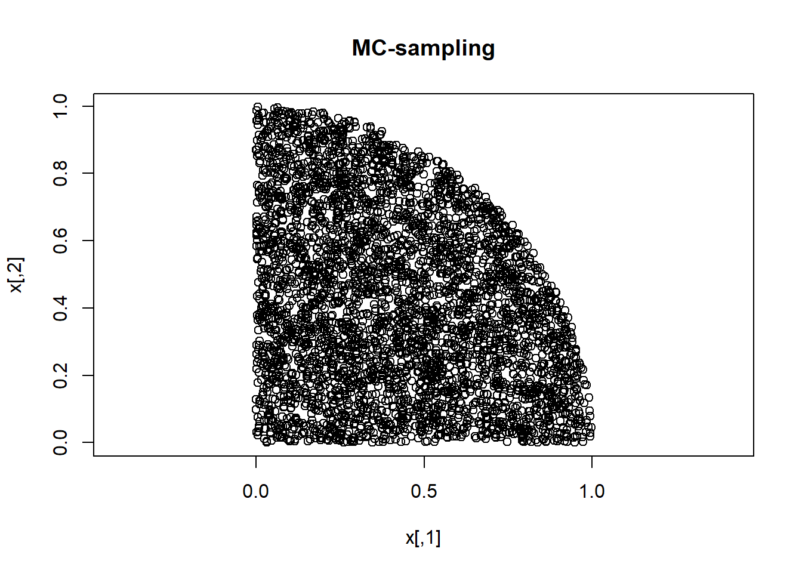

n <- 5000
xproposed <- cbind( runif(n,0,1), runif(n,0,1) )
plot(xproposed, asp=1) iaccept <- xproposed[,1]^2 + xproposed[,2]^2 < 1
x <- xproposed[iaccept,]
plot(x, asp=1,main="MC-sampling")
An introduction with code examples in R
This document gives a basic introduction to Markov Chain Monte Carlo sampling (MCMC). MCMC is a method for sampling from a probability distribution p(x). The method is completely generic, it can produce a representative sample from any kind of distribution. So p(x) can be continuous or discrete, univariate or multivariate.
MCMC is a specific subset of Monte Carlo sampling. We begin by demonstrating a sampling method that is MC but not MCMC.
Say we want to sample from a distribution p(x) that is bivariate, and is uniform within the overlapping area of the unit square and the unit circle. We can use MC to sample from that using the following code.
n <- 5000
xproposed <- cbind( runif(n,0,1), runif(n,0,1) )
plot(xproposed, asp=1) iaccept <- xproposed[,1]^2 + xproposed[,2]^2 < 1
x <- xproposed[iaccept,]
plot(x, asp=1,main="MC-sampling")
Now we turn to MCMC.
MCMC can be implemented in many different ways. Here we shall only use the oldest and simplest method: the Metropolis algorithm. The method does not require you to have a formula for your distribution (such as a probability density function). Let’s use ‘p(x)’ to denote the distribution that you want to sample from. All you need to know to run the Metropolis algorithm is how to calculate the ratio of the p(x) values for any two values of x.
We begin with the same distribution that we already sampled using MC, but this time we sample using MCMC (Metropolis algorithm). So our distribution p(x) is again the bivariate uniform distribution within the overlap of the unit square and the unit circle.
pratio <- function(xa,xb) { (xa[1]^2 + xa[2]^2 < 1) &&
(xa[1]>=0) && (xa[2]>=0) }
# SAMPLING FROM p(x) USING MCMC
n <- 2000
x <- vector("list",n)
x[[1]] <- c(0,0)
for (i in 2:n) {
xproposed <- x[[i-1]] + runif(2,-1,1)
if ( runif(1,0,1) < pratio( xproposed, x[[i-1]]) )
x[[i]] <- xproposed
else
x[[i]] <- x[[i-1]]
end }
x <- do.call(rbind,x)Let’s plot the Markov chain:
plot( x[ 1: 2,],xlim=c(-0.5,1.5),ylim=c(-0.5,1.5), asp=1,
xlab="x[,1]", ylab="x[,2]") ; lines(x[1:2,],type="b")
lines(x[ 2: 3,],type="b")
lines(x[ 3: 4,],type="b")
lines(x[ 4: 5,],type="b")
lines(x[ 5: 6,],type="b")
lines(x[ 6: 7,],type="b")
lines(x[ 7: 8,],type="b")
lines(x[ 8: 9,],type="b")
lines(x[ 9:10,],type="b")
lines(x[10:11,],type="b")
lines(x[11:12,],type="b")
lines(x[12:13,],type="b")
lines(x[13:14,],type="b")
lines(x[14:15,],type="b")
lines(x[15:16,],type="b")
lines(x[16:17,],type="b")
lines(x[17:18,],type="b")
lines(x[18:19,],type="b")
lines(x[19:20,],type="b")
for(i in 21:n) { lines(x[(i-1):i,],type="b") }We see that the MCMC gives the same result as the MC.
We now turn to a distribution where the ratio is more complicated.
pratio <- function(xa,xb) { exp(xb^2-xa^2) }
# SAMPLING FROM p(x) USING MCMC
n <- 5000
x <- vector("list",n)
x[[1]] <- 0
for (i in 2:n) {
xproposed <- x[[i-1]] + runif(1,-1,1)
if ( runif(1,0,1) < pratio( xproposed, x[[i-1]]) )
x[[i]] <- xproposed
else
x[[i]] <- x[[i-1]]
end }
x <- do.call(rbind,x)par(mfrow=c(2,2))
plot(x,type="b")
hist(x) ; print(mean(x)) ; print(sd(x))[1] -0.02422589[1] 0.711142# In this case, R could have given the answer directly
xdirect <- rnorm(n,0,0.7)
plot(xdirect)
hist(xdirect) ; print(mean(xdirect)) ; print(sd(xdirect))[1] 0.001316615[1] 0.6937373pratio <- function(xa,xb) { exp(xb[1]^2-xa[1]^2) * exp(xb[2]^2-xa[2]^2) }
# SAMPLING FROM p(x) USING MCMC
n <- 2000
x <- vector("list",n)
x[[1]] <- c(0,0)
for (i in 2:n) {
xproposed <- x[[i-1]] + runif(2,-1,1)
if ( runif(1,0,1) < pratio( xproposed, x[[i-1]]) )
x[[i]] <- xproposed
else
x[[i]] <- x[[i-1]]
end }
x <- do.call(rbind,x)par( mfrow=c(1,2) )
plot(x,asp=1,type="b")
# In this case too, R could have given the answer directly
require(mvtnorm) ; xdirect <- rmvnorm( n, c(0,0), diag(c(0.5,0.5)) )Loading required package: mvtnormplot(xdirect,asp=1)We now show that MCMC can sample from multimodal distributions, even when the modal regions are separated by a region of zero-probability.
pratio <- function(xa,xb) { (xa[1] ^2 + xa[2] ^2 < 1 ) ||
((xa[1]-2)^2 + (xa[2]-0.5)^2 < 0.5) }
# SAMPLING FROM p(x) USING MCMC
n <- 2000
x <- vector("list",n)
x[[1]] <- c(0,0)
for (i in 2:n) {
xproposed <- x[[i-1]] + runif(2,-1,1)
if ( runif(1,0,1) < pratio( xproposed, x[[i-1]]) )
x[[i]] <- xproposed
else
x[[i]] <- x[[i-1]]
end }
x <- do.call(rbind,x)par( mfrow=c(1,1) )
plot(x[1:2,],xlim=c(-1,3),ylim=c(-1,1.5),asp=1) ; lines(x[1:2,],type="b")
for(i in 3:n) { lines(x[(i-1):i,],type="b",lty=3) }
plot(x,xlim=c(-1,3),ylim=c(-1,1.5),asp=1)Bayes’ Theorem tells us how to use data D to change a prior into a posterior: p(x|D) = p(x) p(D|x) / p(D). There is usually no problem specifying a prior p(x) and a likelihood function L(x) = p(D|x). But we usually do not know what p(D) is. So we cannot write down the formula for the posterior. But we can still use MCMC because the troublesome p(D) terms cancel out in the ratio p(xa|D) / p(xb|D) for any pair of points xa and xb in parameter space. The ratio of posterior probabilities for xa and xb is thus the ratio of “prior times likelihood” for xa and xb:
p(xa|D) / p(xb|D) = p(xa) p(D|xa) / (p(xb) p(D|xb)).
Because that posterior ratio is usually known for any pair of points, MCMC can be used to sample from posterior distributions.
We begin by getting our data, defining our likelihood function, model and prior, and the settings of the MCMC that we are going to do.
require(mvtnorm)
chainLength <- 20000
data <- matrix( c(10, 6.09, 1.83,
20, 8.81, 2.64,
30, 10.66, 3.27),
nrow=3, ncol=3, byrow=T) ; nd <- nrow(data)
Li <- function( model, theta, data, i ) {
dnorm( (model(data[i,1],theta)-data[i,2])/data[i,3] ) }
L <- function( model, theta, data ) {
prod( sapply(1:nd,function(i){Li(model,theta,data,i)}) ) }
logL <- function( model, theta, data ) { log(L(model,theta,data)) }
# We define a function 'model' that is the straight line:
model <- function (x,theta) { theta[1]*x + theta[2] }
np <- 2
prior <- matrix( c(0, 1,
0,10), nrow=np, byrow=T )
pMin <- prior[,1] ; pMax <- prior[,2]
pVector <- rowMeans(prior)
pChain <- matrix(, nrow=chainLength, ncol=np)
pChain[1,] <- pVector
logPrior0 <- sum( log( dunif(pVector,pMin,pMax) ) )
logL0 <- logL(model,pVector,data)
logLChain <- matrix(, nrow=chainLength, ncol=1)
logLChain[1] <- logL0
vcovProposal <- diag( ( 0.2*(pMax-pMin) )^2 )Now we are ready to run the MCMC itself.
for (c in 2:chainLength) {
cint <- min(1000,round(chainLength/10))
if (c%%cint == 0) cat("Iteration",c,"|",logPrior0,"|",logL0,"\n")
candidatepVector <- rmvnorm(n=1, mean=pVector, sigma=vcovProposal)
logPrior1 <- sum(log(dunif(candidatepVector, pMin, pMax)))
if (!is.na(logPrior1)) {
logL1 <- logL(model,candidatepVector,data)
logalpha <- logPrior1 + logL1 - logPrior0 - logL0
if (log(runif(1, min=0, max=1)) < logalpha) {
pVector <- candidatepVector
logPrior0 <- logPrior1
logL0 <- logL1 } }
pChain[c,] <- pVector
logLChain[c,] <- logL0 }Iteration 1000 | -2.302585 | -3.624625
Iteration 2000 | -2.302585 | -2.978931
Iteration 3000 | -2.302585 | -2.99497
Iteration 4000 | -2.302585 | -2.779882
Iteration 5000 | -2.302585 | -3.648091
Iteration 6000 | -2.302585 | -2.901571
Iteration 7000 | -2.302585 | -3.055404
Iteration 8000 | -2.302585 | -3.529154
Iteration 9000 | -2.302585 | -2.953385
Iteration 10000 | -2.302585 | -3.620821
Iteration 11000 | -2.302585 | -3.975887
Iteration 12000 | -2.302585 | -3.205879
Iteration 13000 | -2.302585 | -2.994751
Iteration 14000 | -2.302585 | -3.505028
Iteration 15000 | -2.302585 | -3.275666
Iteration 16000 | -2.302585 | -3.562959
Iteration 17000 | -2.302585 | -3.013346
Iteration 18000 | -2.302585 | -4.644335
Iteration 19000 | -2.302585 | -2.961618
Iteration 20000 | -2.302585 | -3.39914 Let’s examine the MCMC-results.
nAccepted <- length(unique(logLChain))
acceptance <- (paste(nAccepted, "out of ", chainLength,
"candidates accepted ( = ",
round(100*nAccepted/chainLength), "%)"))
print(acceptance)[1] "6126 out of 20000 candidates accepted ( = 31 %)"mp <- colMeans(pChain) ; print(mp)[1] 0.2379781 3.8975903iMAP <- match(max(logLChain),logLChain)
MAP <- pChain[iMAP,] ; print(MAP)[1] 0.2359441 3.8252820pCovMatrix<- cov(pChain) ; print(pCovMatrix) [,1] [,2]
[1,] 0.01548194 -0.2200495
[2,] -0.22004953 4.7335055pCorMatrix<- cor(pChain) ; print(pCorMatrix) [,1] [,2]
[1,] 1.0000000 -0.8128611
[2,] -0.8128611 1.0000000sp <- sqrt( diag(pCovMatrix) ) ; print(sp)[1] 0.1244264 2.1756621plot ( 1:30,model(1:30,mp ), col="black",lwd=3,type="l" )
lines ( 1:30,model(1:30,MAP), col="red" ,lwd=3,type="p" )
points( data , col='blue' ,lwd=3,cex=2 )All these exercises ask you to modify the MCMC-code for linear regression. We want to keep the original code, so copy the code-chunks to this section (or to a new Rmd-file), and modify that copy.